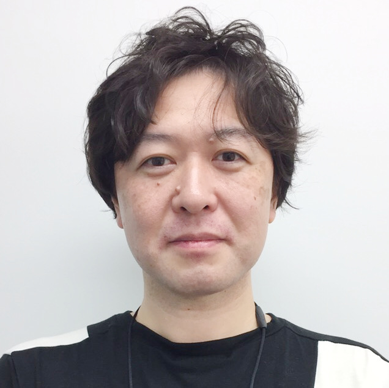
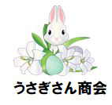

Home / Profile
Data Scientist · Researcher
Hiromitsu Ota
太田 博三 · おおた ひろみつ
目の前の課題(データサイエンス・機械学習)を解決し、中長期的には、 自然言語処理と生成AIを軸に、汎用人工知能（AGI）と 人とAIの共生をデザインする。

About
自己紹介
インターネット業界でWeb解析・データマーケティングに携わったのち、 データアナリスト／データサイエンティストとして分析・モデリングの現場に立ってきました。 現在は研究者として、自然言語処理・生成AI・セマンティックWeb／オントロジー、 そして脳型認知モデルにもとづく解釈可能で信頼できるAIエージェントを探究しています。
実務で培った「データを意思決定につなげる感覚」と、 アカデミアで鍛えた「原理から問い直す姿勢」の両輪を大切にしています。 登壇・執筆・翻訳・OSSを通じて、学びを開いていくことも活動の中心です。
最新技術動向は、松尾研講座やプロジェクトにコミットメントしております。 ビジネス展開では、「システムソリューションズの新井さんや Miraichi の村岡大地さんのように、 新たな道を切り開きたい」と考えております。
2023年からは、AGI（汎用人工知能）の研究発表を行う全脳アーキテクチャ・イニシアティブに参画し、 実行委員長を務めておりました。2025年からは足元を見直し、従来のデータサイエンス・機械学習に加え、 昨今のClaude Code によるアプリケーション開発に従事しています。 さらに、2021年に深層強化学習や世界モデルを受講・修了した知見を活かし、 Physical AI にも挑戦すべく松尾研講座の基礎編を修了し、応用編を受講中です。
Experience
- Excel・Accessによるデータ集計業務
- 電話の入電やLINE・チャットの問い合わせ件数の予測業務
- 役員向け顧客離反分析の提案書作成業務
- 生成AIや業務効率化業務（Copilot、AccessクエリをExcel Power Queryに移植）
- 生成AIによるWebアプリケーション開発
- ナレッジ管理業務（Teamsでの問い合わせ履歴をFAQ化しRAGにアップロード）
For Recruiters & Hiring Managers
自己PR
採用・スカウトご担当の方、現場のマネージャーの方へ。これまでの取り組みと、お任せいただけることをまとめました。
現場の課題をデータと生成AIで「動く仕組み」に変え、経営判断までつなげることが私の強みです。 Web解析・データマーケティングの10年、データアナリスト・データサイエンティストとしての分析・モデリング、 そして小売りのコンタクトセンターでの3年半を通じて、数字を集める側・使う側・判断する側のすべてに立ってきました。 自然言語処理の研究と、松尾研講座での継続的な学び直しで、最新技術を実務に持ち込める状態を保っています。
Award · 2026年10月 積水ハウス イノベーション＆コミュニケーション AIハッカソン 2026 で優秀賞を受賞 ↗ テーマは「事業・業務のAI課題にチームで挑戦」。01
現場の数字を、経営の意思決定へ
コンタクトセンターで、Excel・Access による集計から、電話・LINE・チャットの問い合わせ件数の予測、役員向けの顧客離反分析の提案書作成までを担当。集計で終わらせず、「次に何をするか」まで提案します。
02
生成AIで、業務を実際に軽くする
Copilot の活用や、Access のクエリを Excel Power Query に移す効率化、生成AI・Claude Code による Web アプリ開発を実務で行っています。Dify によるお客様の声の分析など、すぐ使える形に落とし込むのが得意です。
03
暗黙知を言葉にして、チームに広げる
現場に入り込み、ベテランの判断基準を手順やプロンプトに言語化する「伴走型エンジニアリング（FDE）」を実践・発表。コンタクトセンターでは、Teams に蓄積された問い合わせ履歴を FAQ にまとめ、RAG に取り込んで誰でも引ける形にしました。LT登壇や勉強会、書籍の翻訳・共同執筆、学会のオーガナイザーなど、知識を開いて周りを巻き込む活動を続けています。
04
学び続け、最新技術を実務に持ち込む
自然言語処理の研究発表（2017年〜）、LLM・マルチモーダル・AIエージェントの検証に加え、松尾研の GCI（Advanced 修了）・Physical AI 基礎編などを修了し、現在も AX・深層学習・Physical AI の講座を受講中です。
スキル・経験（求人票の項目に合わせて）
経験領域・年数
Web解析・データマーケティング 10年／データアナリスト 4年／データサイエンティスト 6年／コンタクトセンターのデータ分析・業務改善 3年半
言語・ツール
生成AI・LLM
分析・機械学習
業務・ビジネススキル
お任せ／お受け頂けそうな役割
データサイエンティスト／シニアデータアナリスト
職種名データサイエンティスト、データアナリスト、マーケティングアナリスト、需要予測担当、BI・分析企画
- 需要・問い合わせ件数の予測と、人員配置など施策への反映
- 顧客離反・セグメント分析と、経営層向けの提案資料づくり
- Web解析・マーケティング施策の KPI 設計と効果検証
生成AI活用推進／AX・DX 推進リード
職種名生成AI推進担当、DX推進、AI導入コンサルタント、業務改善・BPR担当、社内AI研修講師
- 部門ごとの AI 活用ユースケースの選定と PoC の推進
- 生成AIの利用ガイドライン・セキュリティルールの整備
- 社内勉強会・ハンズオンによる AI リテラシーの底上げ
FDE／AIソリューションエンジニア
職種名FDE（Forward Deployed Engineer）、AIエンジニア、ソリューションアーキテクト、プリセールス、カスタマーサクセス（技術）
- 現場業務のヒアリングと、暗黙知の手順書・プロンプト化
- Dify・Claude Code などでの業務アプリの素早い試作と改善
- Excel・Access から Power Query などへの業務移行と効率化
AI 研究開発（NLP・LLM・エージェント）
職種名リサーチャー、研究開発エンジニア、NLPエンジニア、LLMエンジニア、データサイエンス R&D
- LLM・マルチモーダルモデルの比較検証と評価設計
- マルチエージェントによる業務シミュレーションの設計
- 技術調査・論文化・社外発信（登壇・執筆）
スカウト・お仕事のご相談は、お気軽にご連絡ください。 お問い合わせはこちら ↓
Selected Work
これまでの公開資料
研究・登壇・執筆・実装。テーマで絞り込めます。
文字が大きいほど、多くのスライド・動画・執筆で扱ったテーマです。
スライド・動画から振り返る、取り組みとできること
自然言語処理・文章生成 2017 —
電子情報通信学会（2017）で、マルコフ連鎖・自動要約（LexRank／TextRank）・RNN／LSTM・GAN による文章生成を比較し、「文と文のつながり」が課題であることを検証（関連スライド）。PyCon JP 2017 では文章自動生成の入門講演、NLP2022 ではポスター発表を行いました。
できること 文章生成・要約手法の比較検証と評価設計
LLM の業務活用と評価 2023 —
ChatGPT 部などの LT で、Few-shot プロンプトと論理チェックによる施策の壁打ち、LangChain（map_reduce／refine）での小説要約、ChatGPT プラグインの実用性検証、日本語 LLM 評価（Japanese MT-Bench・Rakuda）の課題を発表。生成AIの著作権・社内ガイドラインの動向も整理しました。
できること LLM 導入の設計、プロンプト設計、評価方法と利用ガイドラインの整備
マルチモーダル生成と解釈可能性 2023 —
GPT-4V による画像の含意関係認識、Text-to-Image／Image-to-Music の変換後の一致性をジャンル表とオントロジーで説明する試み（動画）、『雪国』冒頭を使った日英の「主観／客観」把握の違いの画像生成による検証（東京AI祭 2024、データ横丁 2026）、Fooocus（SDXL）の画像生成ワークショップを実施しました。
できること 生成AIの出力の比較・説明と、広告やクリエイティブ制作への応用提案
AIエージェントとシミュレーション 2024 —
AutoGen で出版社の販売担当者とクリエイターの協議をマルチエージェントで再現し、GPT-4o に文庫カバー案を評価させる実験（Gunma.web #54）。コンタクトセンターで認知バイアスを考慮した応対の売上シミュレーション（Python、1,000 回試行）や、Create.xyz によるノーコードのアプリ試作も行いました。
できること マルチエージェント設計、施策の効果シミュレーション、生成AIによる素早いプロトタイピング
ナレッジマネジメントと FDE 2026 —
SECI モデルを軸に、現場の暗黙知を明示知に翻訳する伴走型エンジニアリング（FDE）を提案。Dify によるお客様の声の分析や、「〜しておいて」に欠けがちな目的・範囲・基準・権限・期限の診断、録音 → 文字起こし → 生成AIの下書き → ベテランの添削という引き継ぎの流れを発表しました。
できること 現場業務の言語化・手順書化と、生成AIを使ったナレッジ共有の仕組みづくり

Pythonによる文章自動生成入門 ↗

言語処理学会 NLP2022 ポスターLT ↗
暗黙知と明示知をつなぐ、伴走型エンジニアリング ↗
モーダル間の変換後の一致性とジャンル表による解釈 ↗

解釈可能性の考察（Text-to-Music / Image-to-Music） ↗
AutoGenによるマルチエージェント対話 ↗
人工知能学会 全国大会 OS オーガナイザ ↗
解釈可能で信頼できるエージェント（共著） ↗
データサイエンス
『Juliaによるデータサイエンス』翻訳 ↗
公式テキスト
ウェブ解析士 認定試験 公式テキスト ↗
技術同人誌（うさぎさん商会） ↗
言語処理学会 ポスター発表 資料 ↗
深層強化学習による対話生成 ↗
LLMによる文書要約（LangChain） ↗
代表的な推薦エンジンの実装デモ ↗
これまでの執筆書籍一覧
一部翻訳 · エヌ・ティー・エス · 2017年9月
Juliaデータサイエンス ― Juliaを使って自分でゼロから作るデータサイエンス世界の探索 ↗
Anshul Joshi 著『Julia for Data Science』の日本語版（共訳）。環境構築から機械学習・深層学習までを扱う、データサイエンティスト向けの Julia 入門書です。数値計算・統計モデル・可視化の手法に加え、バイアスとバリアンスのトレードオフも詳しく解説しています。
共同執筆 · ウェブ解析士協会 · 2016年12月
ウェブ解析士認定試験公式テキスト2017（第8版） ↗
ウェブ解析士協会（WACA）の認定講座・試験に対応する公式テキスト。ウェブマーケティングとウェブ解析に必要な用語、分析、課題の発見と改善の方法を、特定のツールに頼らずに学べる構成です。第8版では内容を全面的に見直し、法律・倫理、スマートフォンアプリの解析、マーケティングオートメーションなどが加わりました。
Certification
資格・修了
東京大学 松尾（・岩澤）研究室・株式会社松尾研究所の講座。受講中・受講予定および修了。
受講中 · In progress
東京大学 松尾・岩澤研究室（松尾研）· 集中講義
Physical AI 応用編1 基礎理論と実践
2026年9月〜10月（全6回＋最終課題・毎週木曜・オンライン）／ 受講中
カリキュラム抜粋
- MLOps・RobOps の導入と実践
- コンピュータアーキテクチャ（メモリ・通信・仮想化・デバイス管理）
- ROS2 入門
- Open Source in Robotics
身につけたことロボット向けの学習・運用パイプライン（MLOps／RobOps）を設計し、ROS2 でセンサーやモーターをつないだ実験環境を組み立てられるようになった。オープンソースのロボット基盤を動かして検証できるようになった。
東京大学 松尾・岩澤研究室（松尾研）· AX推進講座
AXエバンジェリスト講座
2026年9月〜11月（全7回・毎週木曜・オンライン）／ 受講中
カリキュラム抜粋
- AX（AIトランスフォーメーション）推進に向けた導入
- AI活用の基礎体験（ハンズオン）
- ビジネス活用パターン（ケーススタディ）
- セキュリティ・ガバナンス（リテラシー）
- エバンジェリスト実践（社内外への伝道）
身につけたこと社内のAI活用の現状を整理し、ユースケースの選定から PoC、セキュリティ・ガバナンスのルールづくりまで伴走できるようになった。勉強会やハンズオンで、AI活用を社内に広める役割を担えるようになった。
株式会社松尾研究所 · 日本ディープラーニング協会 E資格認定講座
E資格対応｜Deep Learning 基礎講座 2026 Autumn
2026年10月〜12月（全12回・毎週金曜・オンライン）／ 受講中
カリキュラム抜粋
- 機械学習・ニューラルネットワークの基礎、最適化と正則化
- 畳み込みニューラルネットワークと画像認識
- 系列データ処理・Transformer 基礎
- 大規模言語モデルと自然言語処理
- 表現学習・自己教師あり学習、深層強化学習、深層生成モデル
身につけたことPyTorch で CNN・Transformer などを実装・学習させ、画像認識や LLM の調整を検証できるようになった。深層学習の知識を最新の内容に沿って体系的に学び直した。
受講予定 · Upcoming
東京大学 松尾・岩澤研究室（松尾研）· 集中講義
Physical AI 応用編2 エンジニアリング
2026年11月〜12月（全5回＋最終課題・毎週木曜・オンライン）／ 受講予定
カリキュラム抜粋
- ロボティクスの全体像と AI との連携
- 空間の記述と変換（座標系・同次変換）
- 運動学（順運動学・逆運動学・ヤコビアン）
- 動力学（運動方程式、順動力学・逆動力学）
- ロボット制御（運動制御・力制御・インピーダンス制御）
身につけたいこと座標変換・運動学・動力学を踏まえて、ロボットアームの動きや制御を設計し、AIモデルの判断を実際の動作につなげられるようになりたい。
修了 · Completed
株式会社松尾研究所 · 社会人向けデータサイエンス講座
GCI グローバル消費インテリジェンス講座 2026 Summer（Advanced 修了）
2026年4月〜8月（全15回・毎週火曜・オンライン）／ Advanced 修了
学んだこと
- Python基礎・NumPy・Pandasによるデータ処理
- Matplotlibによるデータ可視化
- 教師あり学習（回帰・分類）／特徴量エンジニアリング
- 時系列分析／教師なし学習（クラスタリング・主成分分析）
- モデル検証・ハイパーパラメータチューニング
- マーケティング分析・ビジネス活用提案・SQL／データベース
できること購買・顧客データの前処理と可視化から、回帰・分類・クラスタリングによる予測や顧客セグメント分析、SQL でのデータ抽出までを一通り行い、マーケティング施策の提案につなげる。
東京大学 松尾・岩澤研究室（松尾研）· 集中講義
Physical AI 基礎編
2026年6月〜8月（全7回・毎週木曜・オンライン）／ 修了
学んだこと
- Physical AI の概要と活用
- 模倣学習（Imitation Learning）による学習
- 強化学習によるロコモーション習得
- スケーリングとアーキテクチャ
- 実世界データ収集
- 実運用時の課題と展開（ロボット基盤モデル／LeRobot）
できること模倣学習・強化学習によるロボットの動作学習の考え方を理解し、LeRobot などで小さく試せる。実世界データの集め方や、ロボット基盤モデルを導入するときの課題を整理できる。
松尾・岩澤研究室（東京大学） · 日本ディープラーニング協会 E資格認定講座
Deep Learning 基礎講座 2023（DLB2023）
2023年4月〜7月（全13回・オンライン）／ E資格 認定プログラム
学んだこと
- 機械学習・ニューラルネットワークの基礎、最適化と正則化
- 畳み込みニューラルネットワーク（CNN）／再帰型ニューラルネットワーク（RNN）と系列モデル
- 自然言語処理（NLP）・コンピュータビジョンへの応用
- 生成モデル（VAE・GAN 等）と深層生成
- 強化学習、表現学習・自己教師あり学習
- 深層学習の理論、世界モデル（World Models）
できることニューラルネットワークの設計・学習・評価を実装し、自然言語処理・画像・生成モデルの手法を比較検証できる。
松尾研究室（東京大学） · 集中講義
画像認識（Image Recognition）
2021年 集中講義 ／ 深層学習による画像認識
学んだこと
- 画像認識の基礎と畳み込みニューラルネットワーク（CNN）
- 画像分類（ImageNet 等）と代表的アーキテクチャ
- 物体検出（Object Detection）／セマンティックセグメンテーション
- 転移学習・データ拡張の実践
- 距離学習・自己教師あり学習
- Vision Transformer など最新の画像認識手法
できること転移学習やデータ拡張で少ないデータから画像分類モデルを作り、物体検出・セグメンテーションの手法を目的に応じて選べる。
松尾研究室（東京大学） · 集中講義（オータムセミナー2021）
深層強化学習（Deep Reinforcement Learning）
2021年 オータムセミナー ／ 深層強化学習
学んだこと
- 強化学習の基礎（MDP・価値関数・方策）
- Q学習・DQN／Double DQN
- 方策勾配法・Actor-Critic
- 目的指向型対話（GO Chatbot）への深層強化学習の応用
- 対話状態追跡・ユーザーシミュレータの実装
- エージェント学習の実装演習（train / agent）
できることDQN や方策勾配法でエージェントを学習させ、目的指向型の対話（チャットボット）などに強化学習を応用できる。
Elsewhere
リンク

Get in touch
うさぎさん商会へ、お問い合わせ。
うさぎさん商会は事業者として、技術書典で簡単な書籍を販売しております。
技術書典 — うさぎさん商会のページ ↗
技術同人誌・登壇・研究・データ分析に関するご相談やお仕事のご依頼など、 お気軽にご連絡ください。ご利用のメールソフト、または Gmail・Outlook・Yahoo! メールから送信できます。
30分の 1on1 相談
データ活用・AI・研究・キャリアなど、まずはオンラインで気軽に。所要30分・無料です。